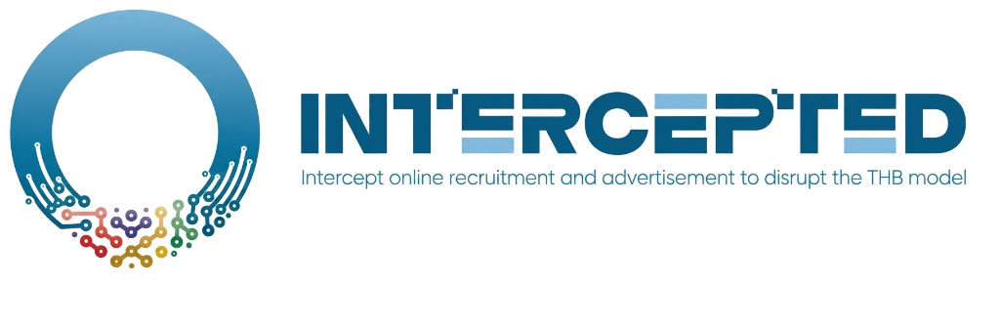
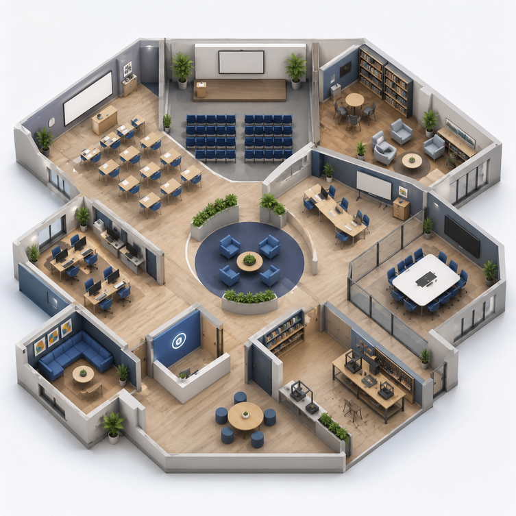
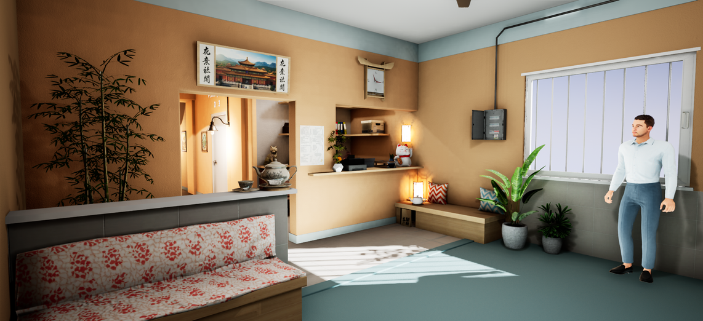

[PROJECT INTERCEPTED]
INTERCEPT ONLINE RECRUITMENT AND ADVERTISEMENT TO DISRUPT THE THB MODEL
INTERCEPTED focuses on disrupting the digital business models of traffickers, considering how evidence and strategies identified in the cyberspace can be used in concrete investigative, prevention, and protective measures in the physical world.
INTERESTED? LEARN MORE BELOW »The project Intercepted contributes to develop the European Virtual Judicial and Security Academy
a training place where the boundaries of geography and language disappear, where judges, prosecutors, lawyers, and legal professionals from across Europe—and beyond—can gather in a shared virtual space to learn, exchange, and grow together on how to prevent and combat trafficking on human beings and the related crimes.

The Intercepted training course covers the following areas

The technical training materials and solutions articulated in 8 modules can be used directly by learners in an asynchronous format, or by trainers in a synchronous format—either in a blended mode (i.e., a mix of classroom and online lessons) or as support tools for in-person training. Please contact our office responsible for combating Human Trafficking if you wish to organize customized courses.
The Academy is a dynamic, immersive virtual environment like no other, where LEAs, legal practitioners and vetted NGOs can navigate a richly detailed space designed not only for learning, but for meaningful interaction and, in the secure area, for operative analysis.
Combating trafficking on human beings
Our correspondent Fausto Biloslavo followed groups of migrants along the Balkan route. This video helps to understand some aspects of the illegal migration mechanism. We kindly ask you to watch it to gain a more accurate understanding of the reality of this phenomenon

The Intercepted project is the continuation of a previous EU-funded project called "BigOSint" which has analyzed numerous cases of human trafficking on an international scale. We invite you to read this document produced in "BigOsint" to gain a comprehensive understanding of the complexity of this phenomenon in its various facets
Case Study AnalysisGuided Exercise of a transnational investigation on THB
This exercise is a training tool designed to explore various aspects of a transnational human trafficking investigation, based on a real but anonymized case. The core of the case focuses on the collection of digital evidence. The exercise can be carried out in groups or individually, but should always be guided by an experienced trainer who can highlight the elements of police cooperation and judicial cooperation involved in the acquisition of digital evidence, as well as the appropriate choice of forensic tools both for searches and for the investigation as a whole.

Risk Indicators to prevent THB
During the Unchained project, also funded by the European Union under the ISF, Agenfor and the consortium members — in particular the Public Prosecutor’s Office of Padua — developed a table of risk indicators intended for those carrying out inspections in small and medium-sized enterprises and markets, as well as for those involved in labour protection, non-governmental organizations, and trade unions protecting workers’ interests.
This table is of great interest for strengthening cooperation and preventing the risks of human trafficking within our societies.
What will you find in the Training Academy?
Core Curriculum
- Evolution of OCG modus operandi in THB
- OSINT & Telecom Surveillance
- Digital Forensics
Flexible Learning
- Online and asynchronous modules
- Adapted for Law Enforcement schedules
Expert Knowledge
- Developed by Specialist Trainers
- Based on Europol, UNODC, NATO reports
- High Level Institutional Reports
Operational Readiness
- OSINT-HUMINT-SIGINT cycle
- Public-Private cooperation
AI Avatar Support
- Closed-circuit assistant
- Legislation & manual clarifications
Legal & Judicial Cooperation
- LEA & Judicial Authorities
- Private Sector & Civil Society
MISSION ADVANTAGE CORE
Practical & Intelligence-Based Approach
Translates the analysis of online dynamics into concrete operational practices for disrupting trafficking networks.
Expert Knowledge
Developed in closed groups with specialist lectures, integrating reports from Europol, UNODC, and NATO into practical institutional models.

Integrated Digital & Analytical Support
Provides tools to interpret online signals and identify trafficking patterns in a secure environment.
Measured Competence & Operational Readiness
Ensures harmonized skill development across different jurisdictions through structured assessments.
6-Step Learning Journey
Entry Test
A quick assessment to measure initial knowledge before starting.
Video Lessons
Sessions of 30 minutes with specialists on technical topics.
Training Material
Transferable resources with key aspects and essential data.
Interactive Simulation
Application of skills in real case studies and operational scenarios.
AI Avatar Support
Closed-circuit AI assistant for instant clarifications on legislation and manuals.
Final Evaluation
Test to validate acquired competencies and complete the module.
AI Avatar
Interactive Guide
Explores national and EU jurisprudence on human trafficking and organized crime.
Multilingual Interaction
Supports voice or text and communicates flawlessly in multiple languages.
Legal Disclaimer
Due to legal complexity, the avatar may make errors or lack recent judgments.
Feedback Loop
User feedback is highly encouraged to improve the AI's accuracy.
Resource Center
INTEL LIBRARY & ASSET HUB
- Module Summary Documents: Summaries and key takeaways for each of the 9 training modules.
- Technical Manuals: Serve as a permanent reference for field operations.
- Exclusive Access: Usage is strictly limited to participants.
- Copyright Restriction: External distribution is prohibited by copyright laws.
General Resources
- Technical manuals: Professional guidelines for field operations.
- Legislation clarifications: National and EU legal frameworks for THB.
- Institutional reports: High-level reports from Europol, UNODC, and NATO.
- Feedback questionnaire: Post-completion survey to improve programs.